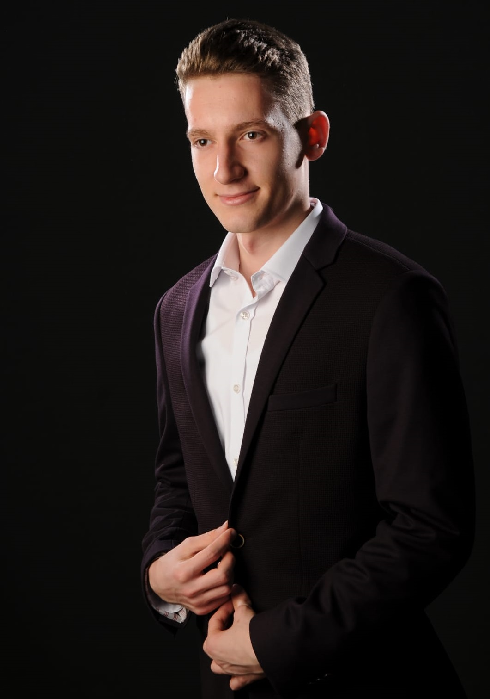

Taha Efe
Anasayfa
Özgeçmiş
Projeler
İletişim

1998 yılında Samsun'un Bafra ilçesinde doğdu. İlk ve orta öğrenimini Bafra Atatürk İlköğretim okulunda okudu.
Bafra Fen Lisesi'nden 2017 yılında mezun oldu. Lise yıllarında sosyal ve başarılı bir öğrenciydi.
2018 yılında Ankara Üniversitesi Bilgisayar Mühendisliği bölümünde üniversite eğitimine başladı. Çeşitli topluluklarda ve sosyal sorumluluk projelerinde aktif rol aldı.
Bunlardan bazıları şunlardır:
- DSC Ankara University General Lead
- Mobiler.dev Etkinlik editörlüğü
- Ankara Universitesi Tandoğan Dans Topluluğu
- Ankara Universitesi Bilgisayar Topluluğu
- UNİFEB1907
Üniversite'nin ilk yıllarında C ve C++ ile tanıştı. Daha sonrasında
Java ve Kotlin ile mobil uygulama geliştirmek üzerine yöneldi.
Web Programlama her zaman ilgisini çekti. Üniversite'de Yapay Zeka
dersinden sonra bu alan ile araştırmalar yapmaya başladı. Makine Öğrenmesi
ve Yapay zeka alanında kendini geliştirmeye devam ediyor. Teknofest 2021
Ulaşımda Yapay Zeka Kategorisinde Tepegöz Takımı ile uçan araçtan nesne tanıma projesi
ile Yolo kullanarak yarışmaya katıldı.
Yetkinlikler:
- C
- C++
- Html/Css
- Python
- Kotlin
- Java
- WebGl
İyi derecede Almanca ve Orta Seviyede İngilizce bilmektedir.